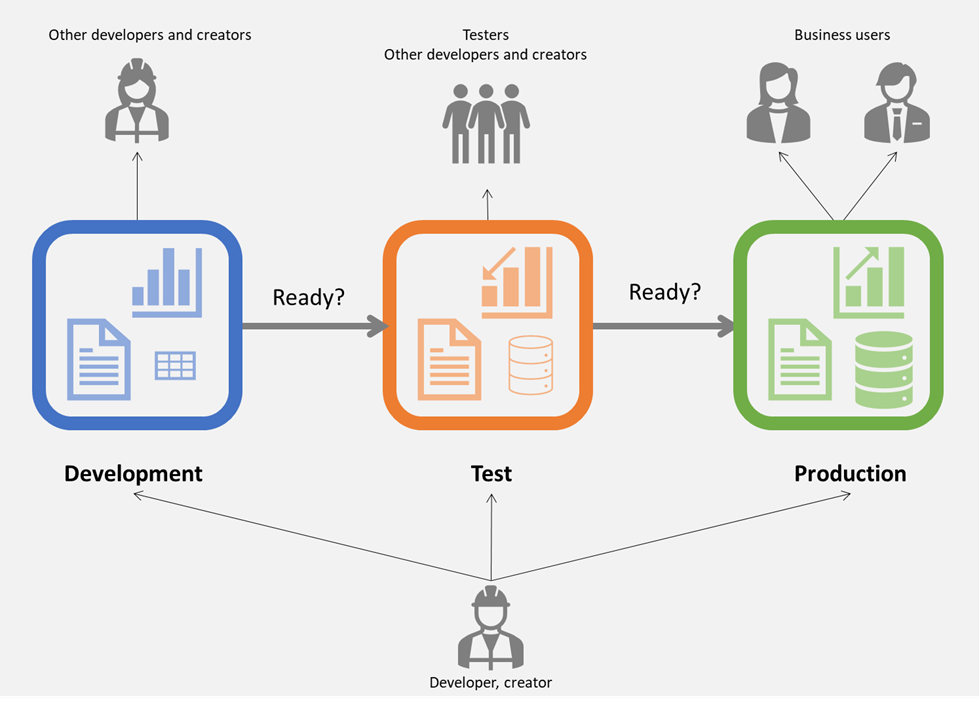
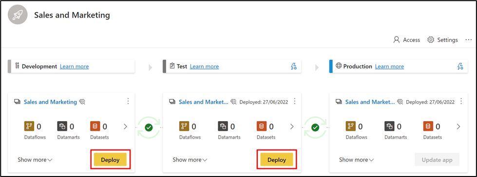
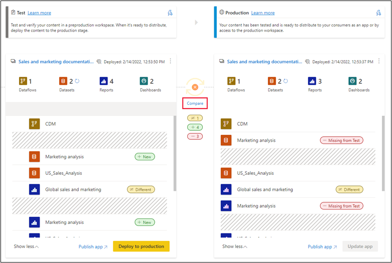
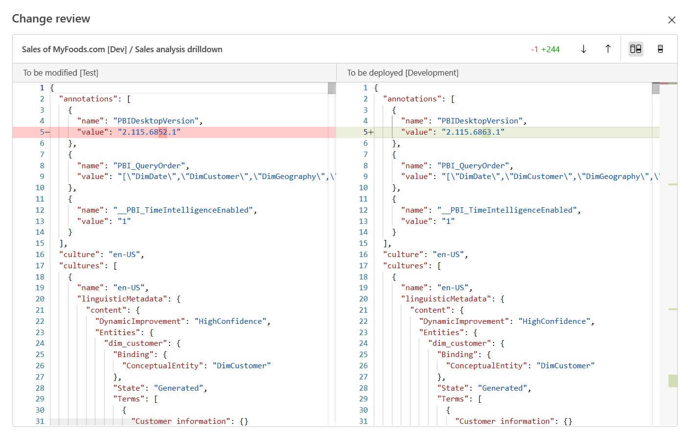
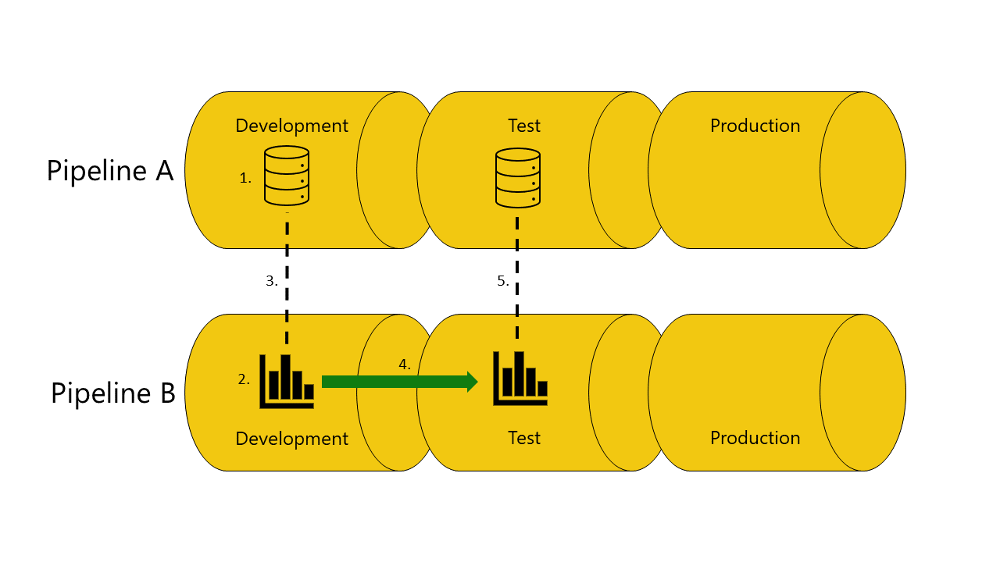

Power BI Deployment Pipeline Overview

In today's data-driven landscape, businesses heavily rely on Business Intelligence (BI) solutions like Power BI. As Power BI projects become more complex, a solid deployment process becomes crucial. Power BI Deployment Pipelines serve this purpose by providing a structured way for creators to develop, test, and eventually deploy content to users. This includes content like reports, dashboards, datasets, and more. The structure of these pipelines consists of three stages:
- Development: For designing, building, and uploading new content.
- Test: Used for sharing content with testers, running tests, and visualizing how the end product will appear to users.
- Production: After adequate testing, this stage is used to share the final version with business users across an organization.
Note: To access Power BI Deployment pipelines, one needs premium capacity.
Tracking Changes in Power BI

Collaborative and sustainable development in Power BI can be challenging without the proper tools. Version Control (or Source Control) is essential as it tracks and manages changes in the source code of a dataset, including DAX, M/Power Query, and model metadata. Source Control Management (SCM) integrates with Continuous Integration/Continuous Deployment (CI/CD), automating processes between development and operations. This ensures smooth merging, testing, and deploying of changes made by different individuals. For Power BI, OneDrive and Sharepoint offer built-in version control for .pbix files. Alternatively, platforms like GitHub or Azure DevOps can be used for .pbix/.pbit files.
For more granular control, external tools like Tabular Editor can be used to save a Power BI file as a .bim file, which is essentially the metadata of your Power BI data model in JSON format.
Setting Up Power BI Deployment Pipelines
To set up a pipeline, click “Create a pipeline” and provide a descriptive name and details. This can be done via the Power BI Service menu or directly within a workspace. Afterward, assign the workspace to the desired pipeline stage (Development, Test, Production). Once content has been added to a pipeline stage, it can be deployed to the next stage. Each stage can be configured differently, for instance, having different databases or query parameters.
When to Use Power BI Pipelines

Power BI Pipelines are especially beneficial in scenarios such as:
- Collaborative Development: When multiple Power BI developers collaborate on files.
- Data Separation: Keeping test and production data separate.
- Test Environment: Providing business users with a testing environment.
- Technical Testing Workspace: Granting access to content ready for technical testing.
Benefits of Power BI Pipelines

Power BI deployment pipelines, also known as Continuous Integration/Continuous Deployment (CI/CD) pipelines, offer numerous advantages:
- Automated Deployment: Reduces manual errors, streamlining releases.
- Consistency and Repeatability: Ensures reliable results by reducing discrepancies between environments.
- Testing and Validation: Ensures high-quality Power BI content through automated testing.
- Continuous Integration and Deployment: Detects issues early and automates deployments, speeding up delivery.
- Collaboration and Standardization: Enhances teamwork and standardization, improving overall efficiency.
- Security and Compliance: Enforces necessary security measures and ensures compliance.
- Efficient Change Management: Minimizes disruptions to users through planned and scheduled changes.
- Scalability: Ensures reliable BI experiences for growing organizations.
- Version Control: Integrates with version control systems, fostering team collaboration.
Best Practices for Power BI Deployment Pipelines

When working with Power BI Deployment pipelines, consider the following best practices:
- 1. Treat Workspaces as Complete Analytics Packages: Organize and structure datasets and reports logically.
- 2. Connect Different Stages to Different Databases: This ensures stability and protects production data.
- 3. Use Parameters in Your Model: This provides flexibility and control over connections.
- 4. Development Stage Best Practices: Use Power BI Desktop for edits and implement version control. Manage models using XMLA read/write capabilities.
- 5. Testing Stage Considerations: Simulate the production environment to evaluate new content from an end user's perspective.
- 6. Production Stage: Limit the number of people who can deploy to production. Ensure continuous data availability during deployments and update the production app post-deployment.
- 7. Avoid Quick Fixes in Production: Implement fixes in the development stage and push them through the deployment pipeline stages for proper testing.
- 8. Consider Backwards Deployment: Useful in specific scenarios, but ensure the previous stage is empty before deploying backward.